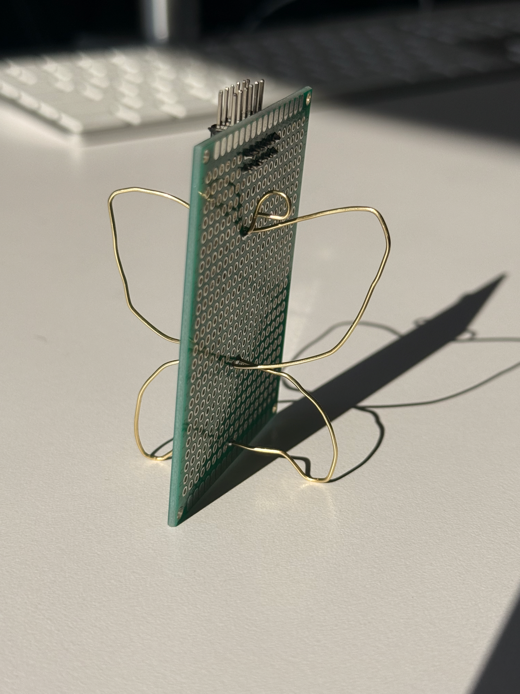
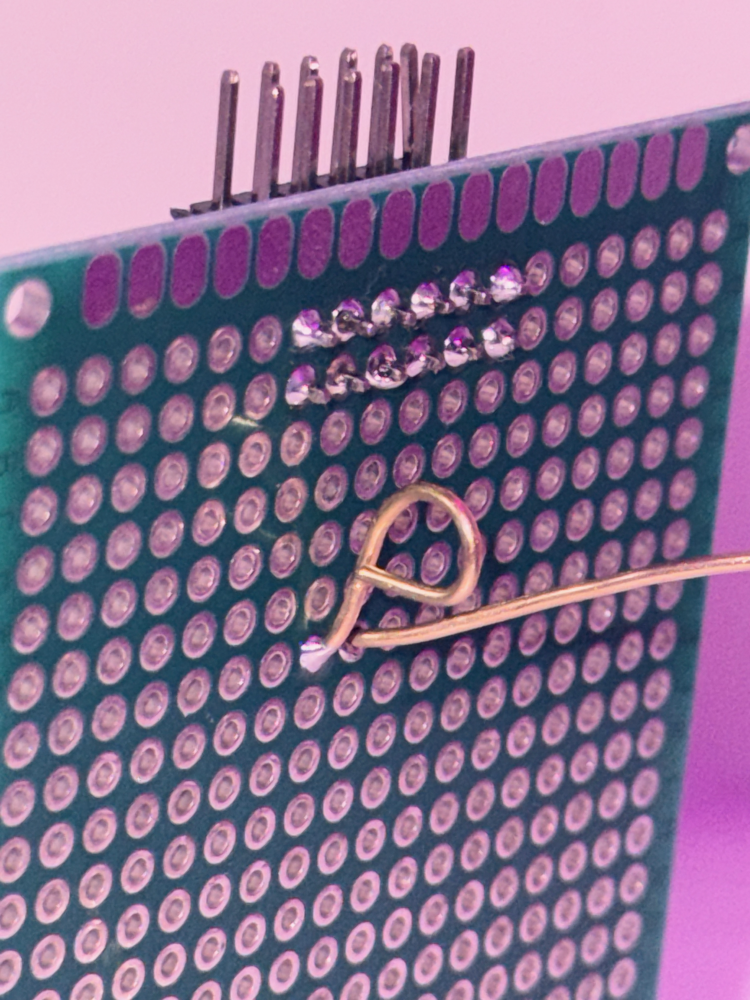

These are some of my projects
Metamorphosis



This piece uses the symmetry of the protoboard the butterfly form created from bent brass wire.
Reflection
I approached this piece by treating the protoboard as both a structural and visual spine, using its natural symmetry to guide the overall form. The butterfly shape emerged as I bent and shaped the brass wire, allowing the design to grow outward in a balanced way. The butterfly represents my own growth and transformation throughout my years at Columbia, much like how a butterfly gradually changes over time. This piece reflects how my skills, confidence, and creative thinking have evolved through continued practice and learning.
Heartbeat


This project involves designing and manufacturing a custom printed circuit board (PCB) for a 555 timer LED flasher circuit using KiCAD software for layout, converting the design files to SVG format, and then physically milling the board on a Carvey CNC machine. After milling the traces, drill holes, and board outline, you'll solder the electronic components (including a 555 timer chip, resistors, capacitors, and an LED) onto the board to create a functional blinking LED circuit powered by a coin cell battery.
Reflection
This project tested my soldering skills considering that my copper pads were pretty small and I had to be very careful and steady when soldering. I chose a heart-shaped design for this project because the pulsing LED mirrors the rhythm of a heartbeat. By having a higher flashing frequency, I wanted to capture the way love accelerates your heart rate due to the feeling of excitement and connection.